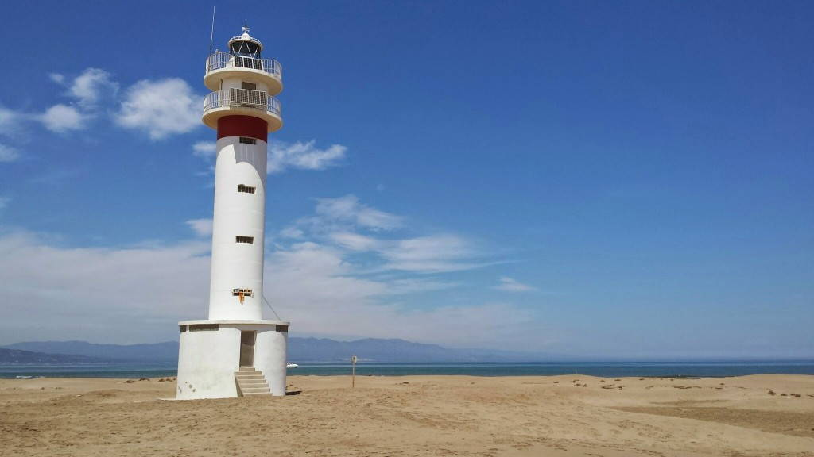
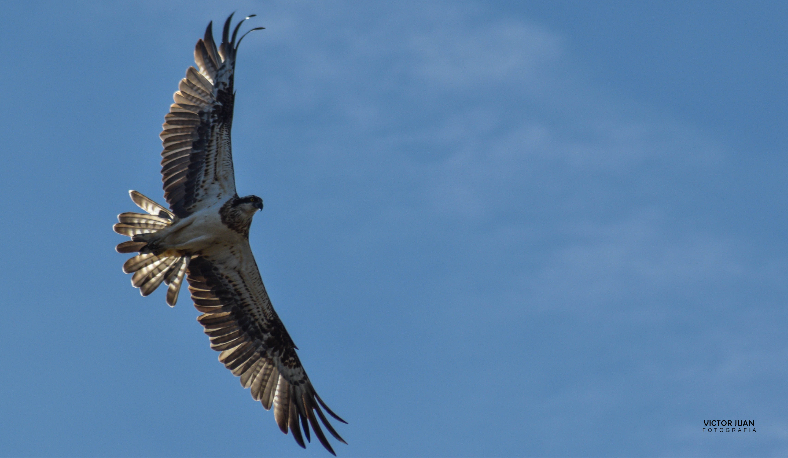

1 / 3

2 / 3

3 / 3

Si el que voleu és estar en contacte amb l’aigua, no us podreu perdre aquesta ruta vora la Badia del Fangar en bicicleta. Un espectacle que combina les activitats tradicionals de la pesca amb el cultiu del musclo i l’’ostra, present a les casetes del mar; les “muscleres”. Tindreu l’oportunitat de recórrer en bicicleta els aiguamolls de depuració farcits d’aus aquàtiques que us envoltaran durant tota la ruta junt amb l’essència de les platges salvatges. Un paisatge excepcional que deixarà hipnotitzats als amants de la fotografia.